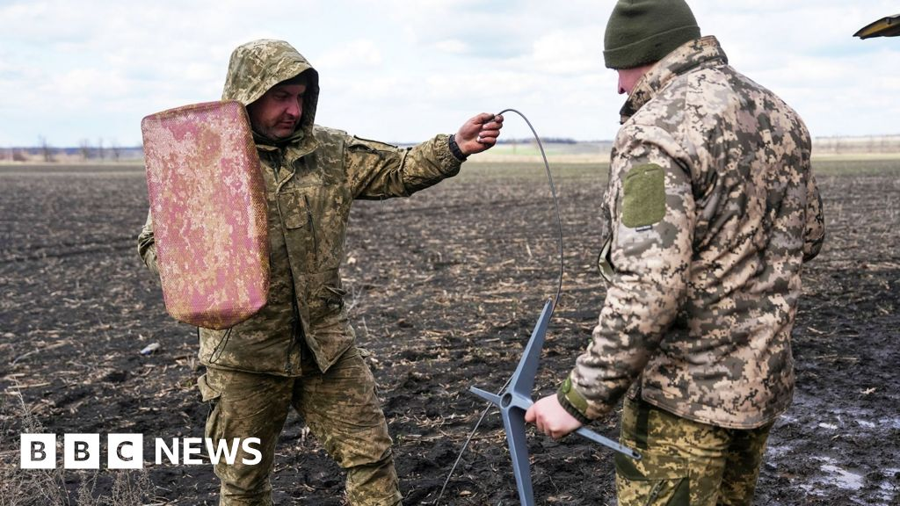
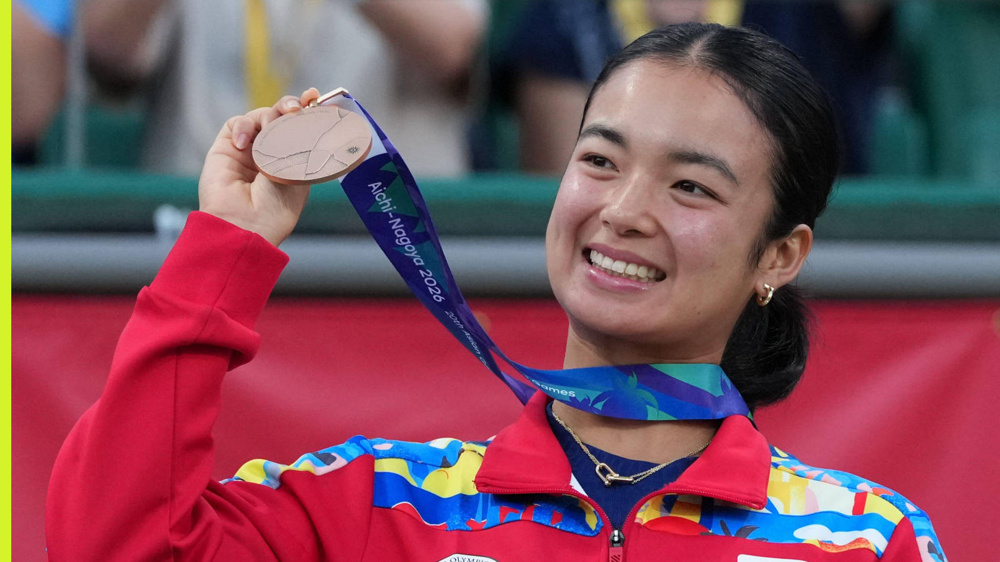
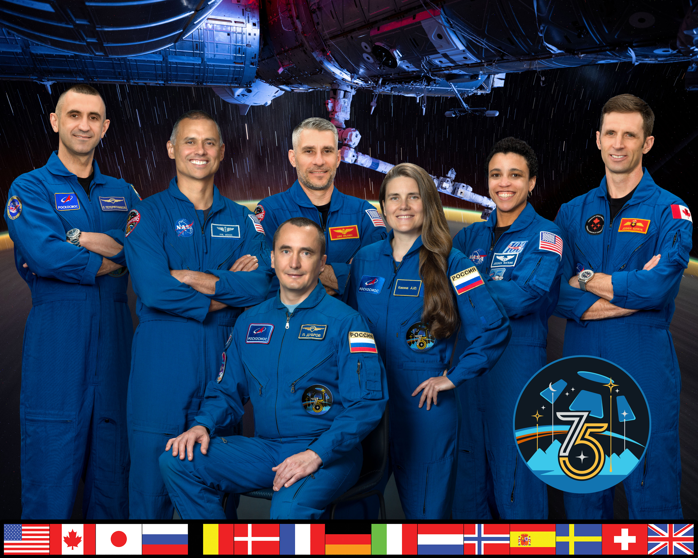

Pope Leo XIV diagnosed with lung adenocarcinoma after surgeons remove the lower lobe of his right lung
14 Oct 2026
BBC / Holy See Press Office: The 90-minute operation at Gemelli on Tuesday had no complications. Wednesday’s blood tests and chest X-ray showed normal recovery; he walked in his room and concelebrated Mass. His schedule is cleared to 20 Oct; tests on whether the cancer spread are pending.
Open BBC
Singapore-registered container ship GFS Pride sinks in the Strait of Hormuz after a projectile strike; sister GFS Giselle damaged
14 Oct 2026
CNA / MPA Singapore: All 21 crew of GFS Pride were evacuated unhurt; GFS Giselle reached a safe anchorage with 22 crew safe. Iran says a ship sank after hitting a mine. Reuters reports Iran shifted tactics about 10 days ago ahead of the US midterms.
Open CNA

Russian missiles and drones leave about 600,000 Ukrainians without power as Starlink limits disrupt front-line drones
14 Oct 2026
BBC / CNN: Russia fired 39 ballistic missiles and over 120 drones at energy sites; three died in Kyiv. Kyiv says Starlink terminals now drop above about 160 km/h, hurting interceptor and mid-range drone missions. Zelenskyy says he feels betrayed by Trump.
Open BBC
Angara backs a blanket social-media ban for minors, but with exemptions for learning apps like Khan Academy
14 Oct 2026
Daily Tribune: The Senate passed an under-16 ban on third reading on 8 Oct; the House version sets the age at 13. DepEd also dropped mock armed-attacker drills as too traumatic and plans more guards and CCTV in the 2027 budget.
Open Daily Tribune
DepEd and DILG sign a memo letting schools request barangay tanods for campus security at arrival and dismissal
14 Oct 2026
Daily Tribune: Tanods supplement, not replace, guards and police, and get child-protection orientation first. Drills must be age-appropriate and trauma-informed. Parent ops: ask the school whether it has filed a tanod request.
Open Daily Tribune
Carlos and Eldrew Yulo lead the Philippines at the World Artistic Gymnastics Championships in Rotterdam, 17–25 Oct
14 Oct 2026
Inquirer: Carlos, fresh off Asian Games floor and vault gold, defends his world vault title. Both brothers enter the all-around; Juancho Miguel Besana works selected events and Haylee Garcia the women’s all-around.
Open Inquirer

PHILTA backs world No 19 Alex Eala after her first-round Wuhan loss to qualifier Shi Han
14 Oct 2026
Tennis365: The Philippine Tennis Association thanked Eala for choosing the Asian Games, where she took singles bronze, over Beijing’s WTA 1000. Wuhan was her first match since Nagoya.
Open Tennis365

SpaceX CRS-35 Dragon set to dock autonomously to the ISS Harmony module at 11 p.m. PH tonight
15 Oct 2026
NASA: The cargo craft launched 13 Oct with science and supplies. Docking is targeted at 11 a.m. EDT (11 p.m. PH) to Harmony’s space-facing port; NASA coverage starts at 9:15 p.m. PH.
Open NASA